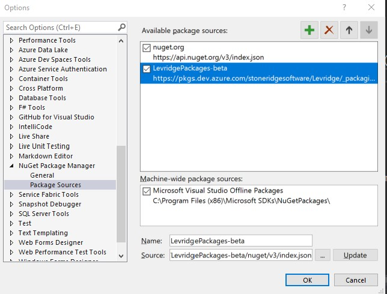

Introduction
In many implementations a client will have specific needs that require custom fields to be added to existing entities or custom behavior for an existing field in an integration. This document shows how to create a custom field extension to have those custom fields integrated when the entity is being integrated.
Overview
In order to integrate custom fields you will need to create a Visual Studio solution with upto three projects:
- Custom Source Proxy Project
Contains the proxy for the source datasource with the custom fields in the entities This project is only necessary if there are custom fields in the source. If your customizations only include custom behavior for existing fields then a custom source proxy will not be needed.
- Custom Destination Proxy Project
Contains the proxy for the desitination datasource with the custom fields in the entities This project is only necessary if there are custom fields in the destination. If your customizations only include custom behavior for existing fields then a custom destination proxy will not be needed.
- Custom Mapping Project
Contains the code need to map the integration for the custom fields between the source and destination entities
Note: If there are no custom fields involved and you are only defining custom behavior for existing fields you will not need new proxies. You only need a proxy to define the metadata for custom fields.
Please see Deploying Custom Field Mapping Assemblies for information on deploying the custom mapping assembly.
Tutorial
Create the Solution
The first step is to create a Visual Studio solution for the custom mapping.
In Visual Studio, create a new C# Class Library (.NET Core).

You may want to give the solution a different name than the project. In our example, the customer is Comstock so we will name the solution "ComstockCustomMapping" and the project Levridge.Integration.IntegrationService.Mapping.Comstock. We recommend you use this naming convention for your custom mapping project: Levridge.Integration.IntegrationService.Mapping.[clientname].
Create the Source Proxy Project
Create the Destination Proxy Project
Add References to the Custom Mapping Project
The Levridge packages are published to our DevOps Artifacts so you will need to add a Nuget source for those
packages. This is done in Visual Studio from Tools/Options/NuGet Package Manager/Package Sources.
The source is https://pkgs.dev.azure.com/stoneridgesoftware/Levridge/_packaging/LevridgePackages-beta/nuget/v3/index.json
If you are working the LevDevelopment branch. If you are working in the customer's repository you should use
https://pkgs.dev.azure.com/stoneridgesoftware/Levridge/_packaging/LevridgePackages/nuget/v3/index.json which
is the released version of the packages.

You will need to add the following Nuget references to your custom mapping project:
- Levridge.EntityFramework
- Levridge.Integration.IntegrationService.Abstractions
- Levridge.Integration.IntegrationService.Mapping
- Microsoft.Extensions.DependencyInjection
- System.ComponentModel.Composition
Note: The Levridge packages are available from our Azure DevOps Artifacts repository. The URL for released packages is https://pkgs.dev.azure.com/stoneridgesoftware/Levridge/_packaging/LevridgePackages/nuget/v3/index.json
Add Source and Destination Datasource References to Custom Mapping Project
You will need to reference the destination data source project in order to have access to any Field types and other types used during mapping. If your datasource is CRM you would include this reference: * Levridge.ODataDataSources.CRMODataDataSource
If your datasource is F&O you would include this reference: * Levridge.DynamicsAxDataSource
Update the references to be excluded from deployment
These references will be needed for the build process, but we will want to use the libraries
provided by the standard deployment and not deploy our own copy of the libraries with the custom
mapping assemblies. To accomplish this, we let the msbuild system know to exclude these
libraries from the runtime deployment by adding <ExcludeAssets>runtime</ExcludeAssets> to the
<PackageReference> node for each package. You should have an <ItemGroup> node that looks somthing like
this.
<ItemGroup>
<PackageReference Include="Levridge.EntityFramework" Version="2.0.10">
<ExcludeAssets>runtime</ExcludeAssets>
</PackageReference>
<PackageReference Include="Levridge.Integration.IntegrationService.Abstractions" Version="1.0.0">
<ExcludeAssets>runtime</ExcludeAssets>
</PackageReference>
<PackageReference Include="Levridge.Integration.IntegrationService.Mapping" Version="1.0.0">
<ExcludeAssets>runtime</ExcludeAssets>
</PackageReference>
<PackageReference Include="Levridge.ODataDataSources.CRMODataDataSource" Version="2.1.15">
<ExcludeAssets>runtime</ExcludeAssets>
</PackageReference>
<PackageReference Include="Microsoft.Extensions.DependencyInjection" Version="3.0.2">
<ExcludeAssets>runtime</ExcludeAssets>
</PackageReference>
</ItemGroup>
Add a reference to the two datasource proxy projects
Your custom mapping methods will need to access the source and data entities so you will need to add a reference to the two proxy projects you created in sections Create the Source Proxy Project and Create the Destination Proxy Project
If you do not need a custom proxy project you should add a reference package to the correct Levridge nuget package. The F&O and CRM packages are: * Levridge.DynamicsAxDataSource * Levridge.ODataDataSources.DynamicsCRM
Create An EntityMapBuilderExtension class
We need to have a class that will contain the necessary mapping methods for the custom fields being added to the integration.
- Create a public class
This can not be a static class because Microsoft MEF won't export a static class.
- Add the [Export] attribute to the class The Export attribute is in the System.ComponentModel.Composition that was added in the section Add References to the Custom Mapping Project
- Name the class
We recommend using something like [client]CustomFieldsEntityMapping. The actual name is
not important, orther than to be clear the purpose of the class. In our example
we named the class
ContosoCustomFieldsEntityMapping. - Add a public static void method that takes a single
IServiceCollectionparameter. In our example we added the following method:public static void AddContosoCustomMaps(IServiceCollection services) - Add a private static method that takes a single
IEntityMapBuilderparameter and returns anIEntityMapBuilderand takes two generic parameters. In our example we added the following method:private static IEntityMapBuilder AddContosoCustomFieldsToMaps<TSource, TTarget>(IEntityMapBuilder builder) -
Add the following code to the public static method created in step 3 above:
var builder = new EntityMapBuilder(services); ContosoCustomFieldsEntityMapping.AddContosoCustomFieldsToMaps
The second line should reference the current class and the method you created in step 4 above. Here is our complete method in the example:
public static void AddLandusCustomMaps(IServiceCollection services) { var builder = new EntityMapBuilder(services); ContosoCustomFieldsEntityMapping.AddContosoCustomFieldsToMaps
Note: The namespaces AxEntities and CRMEntities should reference your custom proxies if you created them otherwise it should reference the packaged Levridge provided proxy
-
Add the following code to the private static method created in step 4 above:
if (builder == null) { throw new ArgumentNullException(nameof(builder)); } return EntityMapBuilderHelper.InvokeMappingMethods(builder, typeof(ContosoCustomFieldsEntityMapping));
The first block validates the parameter. The last line calls a method on a helper class to invoke all the mapping methods on the class we are now building. Here is our complete method in the example:
private static IEntityMapBuilder AddContosoCustomFieldsToMaps
-
Create mapping methods
-
Create a private static method that a single
IEntityMapBuilderparameter and returns anIEntityMapBuilderName the method Map[SourceEntity]_[DestinationEntity].In our example we added the following method:
private static IEntityMapBuilder MapCustomerV3_lev_customer(IEntityMapBuilder builder)This method will add the custom field mapping for CustomerV3 to lev_customer -
Add an [EntityMapMethod] Attribute to the map method
-
Add mapping code in the map method The mapping code is split into two levels: - AddEntityMap The structure of the
AddEntityMapis an extension method onIEntityMapBuilderthat takes two generic parameters for the source and target entities and anActionmethod parameter used to configure the EntityMap by adding field maps for the entities. - AddFieldMapAddFieldMapis a method onEntityMap. There are several that takes two generic parameters for the source field type and target field type and anActionmethod parameter used to configure the EntityMap by adding field maps for the entities.Here is an example method that adds mapping for CustomerV3 to lev_customer:
private static IEntityMapBuilder MapCustomerV3_lev_customer(IEntityMapBuilder builder) { builder.AddEntityMap<AxEntities.CustomerV3, CRMEntities.lev_customer>(em => { em.AddFieldMap<String, String>( new JSONField<String>(nameof(AxEntities.CustomerV3.LevPrintName)), new CRMODataField<String>(nameof(CRMEntities.lev_customer.lev_name)), (a, b) => { String printName = a.Value; String organizationName = (String)a.FieldEntity[nameof(AxEntities.CustomerV3.OrganizationName)].Value; return String.IsNullOrEmpty(printName) ? organizationName : printName; }, (b, a) => { throw new IntegrationNotSupportedException(); }); em.AddFieldMap<String, String>( new JSONField<String>(nameof(AxEntities.CustomerV3.LevInCareOf)), new CRMODataField<String>(nameof(CRMEntities.lev_customer.lev_incareof))); em.AddMapReferencedField(nameof(AxEntities.CustomerV3), nameof(AxEntities.CustomerV3.LevPrintName)); }); return builder; }
Example Mapping
using System;
using Microsoft.Extensions.DependencyInjection;
using Levridge.EntityFramework;
using Levridge.ODataDataSources;
using Levridge.Integration.IntegrationService.Abstractions;
using AxEntities = ContosoCustomFields.Microsoft.Dynamics.DataEntities;
using CRMEntities = ContosoCustomFields.ODataDataSources.DynamicsCRM;
using System.ComponentModel.Composition;
namespace Levridge.Integration.IntegrationService.Mapping.ContosoCustomFields
{
[Export]
public class ContosoCustomFieldsEntityMapBuilderExtensions
{
public static void AddContosoCustomMaps(IServiceCollection services)
{
var builder = new EntityMapBuilder(services);
ContosoCustomFieldsEntityMapBuilderExtensions.AddContosoCustomFieldsToMaps<AxEntities.CustomerV3, CRMEntities.lev_customer>(builder);
}
private static IEntityMapBuilder AddContosoCustomFieldsToMaps<TSource, TTarget>(IEntityMapBuilder builder)
{
if (builder == null)
{
throw new ArgumentNullException(nameof(builder));
}
return EntityMapBuilderHelper.InvokeMappingMethods(builder, typeof(ContosoCustomFieldsEntityMapBuilderExtensions));
}
[EntityMapMethod]
private static IEntityMapBuilder MapCustomerV3_lev_customer(IEntityMapBuilder builder)
{
builder.AddEntityMap<AxEntities.CustomerV3, CRMEntities.lev_customer>(em =>
{
em.AddFieldMap<String, String>(
new JSONField<String>(nameof(AxEntities.CustomerV3.LevPrintName)),
new CRMODataField<String>(nameof(CRMEntities.lev_customer.lev_name)),
(a, b) =>
{
String printName = a.Value;
String organizationName = (String)a.FieldEntity[nameof(AxEntities.CustomerV3.OrganizationName)].Value;
return String.IsNullOrEmpty(printName) ? organizationName : printName;
},
(b, a) =>
{
throw new IntegrationNotSupportedException();
});
em.AddFieldMap<String, String>(
new JSONField<String>(nameof(AxEntities.CustomerV3.LevInCareOf)),
new CRMODataField<String>(nameof(CRMEntities.lev_customer.lev_incareof)));
em.AddMapReferencedField(nameof(AxEntities.CustomerV3), nameof(AxEntities.CustomerV3.LevPrintName));
});
return builder;
}
[EntityMapMethod]
private static IEntityMapBuilder MapCustomerV3_account(IEntityMapBuilder builder)
{
builder.AddEntityMap<AxEntities.CustomerV3, CRMEntities.account>(em =>
{
em.AddFieldMap<String, String>(
new JSONField<String>(nameof(AxEntities.CustomerV3.LevPrintName)),
new CRMODataField<String>(nameof(CRMEntities.account.name)),
(a, b) =>
{
String printName = a.Value;
String organizationName = (String)a.FieldEntity[nameof(AxEntities.CustomerV3.OrganizationName)].Value;
return String.IsNullOrEmpty(printName) ? organizationName : printName;
},
(b, a) =>
{
throw new IntegrationNotSupportedException();
});
});
return builder;
}
[EntityMapMethod]
private static IEntityMapBuilder MapInventSite_lev_companysite(IEntityMapBuilder builder)
{
builder.AddEntityMap<AxEntities.InventSite, CRMEntities.lev_companysite>(em =>
{
em.AddFieldMap<String, String>(
new JSONField<String>(nameof(AxEntities.InventSite.LevRegionId)),
new CRMODataField<String>(nameof(CRMEntities.lev_companysite.stn_region)));
});
return builder;
}
}
}
Deploying the Custom Mapping Assemblies
To deploy the custom assembly you simply copy the output of the mapping assembly to the same directory that contains the Levridge.Integration.Host assemblies.
See Deploying Custom Field Mapping Assemblies for more information.